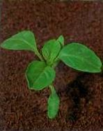

SZŐRÖS DISZNÓPARÉJ
AMARANTHUS RETROFLEXUS L. (AMARE)
ÉLETFORMA: T4
TERMÉS: Toktermése kupakkal nyílik. A lepellevelek
szabadok, a toknál kissé hosszabbak. Magva lencse alakú, összenyomott, éles peremű,
vörösfekete színű, fényes, sima, 1 mm átmérőjű. Ezermagtömege 0,3- 0,5g.
CSÍRANÖVÉNY: Sziklevelei elliptikusak, 10-15 mm hosszúak,
épszélűek.
KIFEJLETT NÖVÉNY: Vastag karógyökerű, I5-150 cm magas,
tompazöld színű, felálló, vastag, pelyhesen szőrözött szárú növény. Levelei
hosszú nyelűek, tojásdadok, hirtelen nyélbe keskenyedők, és csúcsuk felé
fokozatosan hegyesedők. A levelek széle ép, a levélnyél és az erek sűrűn
szőrösek. A virágok igen vastag, tömött, rövid, sűrűn álló füzéreket alkotnak.
Virágai a 4-6 mm hosszú, szúrós hegyű, merev előlevélkék hónaljában ülnek. Az 5
lepellevél 2-3 mm hosszú, keskeny lapát alakú, tompa vagy kicsípett szálkahegyű.
Júniustól októberig virágzik. Virágszíne zöld. Magprodukciója igen nagy,
általában 10 000-40 000 között van növényenként, de 500 000-et is számoltak.
Magvai áprilistól kezdenek csírázni, és a nedvességtől függően őszig bármikor
kikelhetnek. A magvak csírázási optimuma 30-40 °C között van, a fény stimulálja a
csírázást. Kompetíciós képessége igen jelentős. A kultúrnövényekben 40-50%-os
terméscsökkenést is okozhat. Triazinherbicidek tartós használata triazin rezisztens
biotípusok megjelenéséhez vezethet.
ELTERJEDÉSE: Talajban nem válogatós, savanyú és meszes
talajokon egyaránt előfordul.
 |